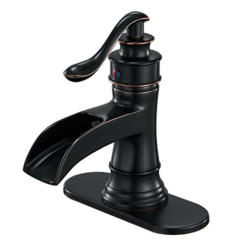
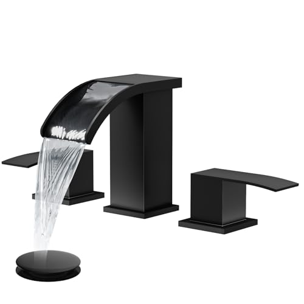
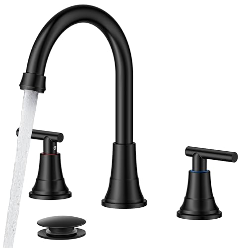

The Best Bathroom Faucet Buying Guide (2026)
Prices and picks verified as of July 2026. Independent, reader-supported reviews.


Things to Know Before You Buy
- Count your sink's holes first. The number and spacing of the holes already drilled in your sink or countertop decide which faucets fit. Get this wrong and nothing else matters.
- The finish is something you live with daily. Matte black and brushed nickel hide water spots and fingerprints far better than polished chrome, which looks great in the box and smudged by Tuesday.
- A ceramic-disc valve keeps it from dripping. The valve is the part that wears out. Ceramic-disc cartridges outlast the old rubber-washer designs by years, so confirm it before you buy.
- Lower flow saves money without feeling weak. A faucet rated around 1.2 gallons per minute cuts your water use and still feels full at a bathroom sink, where you rinse hands instead of filling pots.
Buying a bathroom faucet sounds simple until you open the listings and hit widespread, centerset, single-hole, ceramic-disc valves, and a dozen finishes that photograph identically. You pick on looks, get the box home, and only then discover the faucet does not match the holes in your sink. That returned-faucet shuffle is the most common mistake in this category, and you can avoid it.
Work through the decisions in the order that matters: first whether a faucet fits your sink, then how to pick a finish and valve you will not regret, and last how to keep it looking new. I focus on the trade-offs you feel day to day and skip the spec-sheet jargon that sells faucets but says little about living with one.
The short version: measure your sink's hole layout before you shop, favor a ceramic-disc valve and a fingerprint-resistant finish, and ignore flashy features you will not use. Get those three right and almost any well-reviewed faucet in your budget will serve you for a decade.
What You Need to Know
Before anything else, look down at your sink. Bathroom faucets match a hole configuration, and the number and spacing of those holes determine fit. A pedestal or vessel sink usually has one hole; a standard drop-in sink often has three holes spaced four inches apart; an older or higher-end setup may have three holes spaced eight inches or more. If you do not know what you have, find that out first, because a beautiful widespread faucet is useless on a single-hole basin.
A faucet is two systems bolted together: the body you see and the valve you do not. The body covers finish and style. The valve is the cartridge inside that opens and closes the water, and it fails when a faucet starts to drip. Ceramic-disc cartridges have become the standard because they handle hard water and years of use far better than older compression washers.
Keep your expectations grounded. A bathroom sink faucet does light duty next to a kitchen one. You do not need a high arc, a pull-down sprayer, or a sky-high flow rate. You need something that fits, seals, and matches the rest of your hardware. Nail those basics and the rest is preference.
Types and Categories
Faucets break down first by how they mount, and that mounting type is the category that has to match your sink. Single-hole faucets combine the spout and a single lever in one unit that drops through one hole, the cleanest look and the easiest install. Centerset faucets fit three holes spaced four inches apart and put the spout and two handles on one connected base. Widespread faucets also use three holes but space them eight to sixteen inches apart, with the spout and handles as separate pieces for a more upscale, customizable layout. Wall-mounted faucets come out of the wall above the sink and require plumbing already roughed into the wall, so they are mostly a remodel decision.
Within those mounting types you will see style labels too. Waterfall faucets pour a wide, flat stream and lean modern; touchless or motion-activated models add a sensor for hands-free operation; and standard single-lever or two-handle designs cover everything in between. Handle count is partly looks and partly habit: a single lever lets you set temperature with one wet hand, while two handles give you finer hot-and-cold control and a more traditional appearance.
No category wins for everyone. The right type is whichever matches your sink's holes and the look of the room, so fit comes before style.
How to Choose
Start with fit, because it is the only factor with a wrong answer. Count the holes in your sink and measure the center-to-center distance between the outer two if there are three. A single hole points you to single-hole faucets; three holes four inches apart means centerset; three holes eight inches apart means widespread. If you are buying a new sink at the same time, decide the faucet style first and buy a sink drilled to match.
Once you know what fits, pick a finish you can live with rather than the one that looks best in a studio photo. Brushed nickel and matte black are the most forgiving day to day because they mask water spots and fingerprints; polished chrome is bright and cheap but shows every smudge; brushed gold and bronze tones read warmer and are trending, but confirm the rest of your hardware can match. Whatever you choose, the finish should tie into your towel bars, showerhead, and cabinet pulls so the room looks intentional.
Then check the valve and the flow rate. Look for a ceramic-disc cartridge, which is the durability spec that predicts how long the faucet goes without dripping. For flow, a rating around 1.2 gallons per minute is the sweet spot for a bathroom sink: it meets water-efficient standards and still feels full when you rinse. Anything advertised much higher is overkill here.
Set a budget last, not first. Most solid bathroom faucets land between thirty and a hundred and fifty dollars, and spending more buys you finish quality and a longer warranty rather than better water. Decide your ceiling, then choose the best-reviewed faucet that fits your sink and finish plan inside it.
Common Mistakes to Avoid
The biggest mistake is buying before measuring. You fall for a faucet's look, order it, and discover it needs three holes when your sink has one, or that the spout reaches so far it splashes past the basin. A two-minute check of your hole count and a glance at the spout's reach and height against your sink saves a return and a second shipping wait.
The second mistake is chasing finishes that fight the rest of the room. A gorgeous matte black faucet next to chrome towel bars and a nickel showerhead reads as a mismatch. If you are not redoing all the hardware at once, match the faucet to what you already have rather than introducing a third metal.
You can also overpay for features you will not use. A motion sensor or a high-arc gooseneck earns its keep in some setups and adds pure cost in others; do not pay for either without a specific reason. And do not skip the included parts: tossing the supply lines, mounting hardware, or aerator from the box turns an easy install into an extra trip to the store. Ignoring the valve type for looks alone leads to a drip a year or two down the line.
Care and Maintenance
Keeping a faucet looking new is mostly about what you do not do. Wipe it down with a soft cloth and a little dish soap or plain water, then dry it. Skip abrasive pads, scouring powders, and acidic or bleach-based cleaners, all of which can dull or pit a finish over time. Matte black shows scratches worst, so be gentle with it.
If you have hard water, mineral scale is your real enemy. White crust on the spout or a stream that has gone weak or splits in two usually means the aerator, the little screen on the tip, has clogged. Unscrew it, soak it in white vinegar for an hour, brush it clean, and screw it back on. Doing this every few months restores flow and is the cheapest maintenance in the bathroom.
When a faucet starts to drip, you rarely need a new faucet. The cartridge inside has worn, and on most modern designs you can swap that replaceable part in a few minutes with the water shut off. Keep the model name and any paperwork so you can order the matching cartridge. With that one repair, a decent faucet lasts ten years or more.
Our Top Picks
After comparing dozens of bathroom faucets across price, finish, and installation type, these are the three we keep recommending. Each represents the best of a different priority: a budget statement piece, a widespread premium, and a mid-tier all-rounder.

Editor's Pick
BWE Waterfall Bathroom Faucet (Oil Rubbed Bronze)
Cinematic waterfall spout on an antique bronze body that turns a basic vanity into a statement piece for under $35.
$32.99
Check Price on Amazon
Premium Choice
gotonovo 8" Widespread Waterfall Bathroom Faucet
Two-handle widespread design for double-sink vanities, with a wider waterfall stream and brushed-nickel finish.
$58.99
Check Price on Amazon
Best Value
FORIOUS Black Bathroom Faucet (3-Hole, 2-Handle)
Matte-black hot/cold widespread combo that holds up in hard-water bathrooms, a premium look at mid-tier price.
$45.99
Check Price on AmazonFrequently Asked Questions
How do I know how many holes my sink needs?
Which faucet finish is easiest to keep clean?
What does a ceramic-disc valve actually do?
Is a low flow rate going to feel weak?
Can I install a bathroom faucet myself?
Verdict
Choosing a bathroom faucet is far less complicated than the listings make it feel, as long as you tackle the decisions in the right order. Fit comes first: count your sink's holes and measure the spacing so you are shopping in the right category, whether that is single-hole, centerset, or widespread. Get that wrong and even the best faucet is going back in the box.
After fit, the choices come down to living with the faucet for the next decade. Pick a forgiving finish like brushed nickel or matte black that ties into your existing hardware, insist on a ceramic-disc valve so it does not start dripping, and accept a flow rate around 1.2 gallons per minute instead of paying for features you will not touch. Keep it gentle when you clean, soak the aerator when hard water dulls the stream, and swap the cartridge if it drips. Do those few things and a modestly priced faucet does its job for years, which is what a bathroom faucet should do.